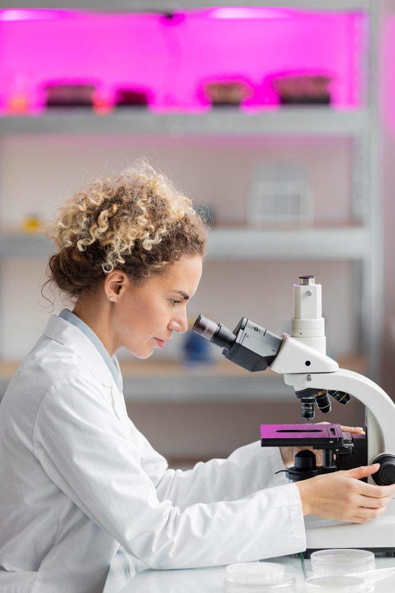
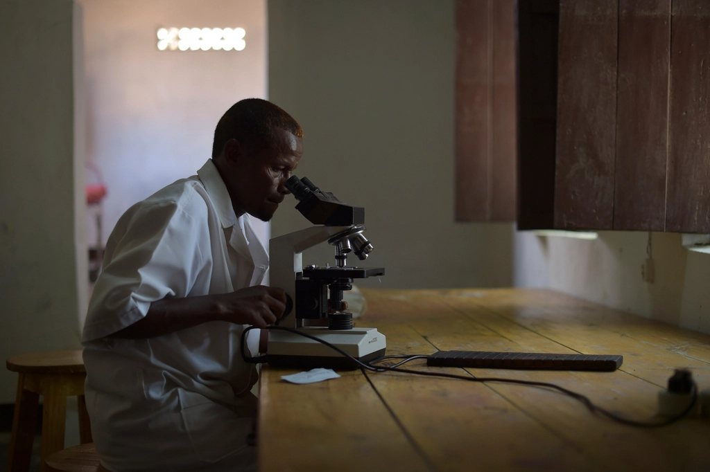
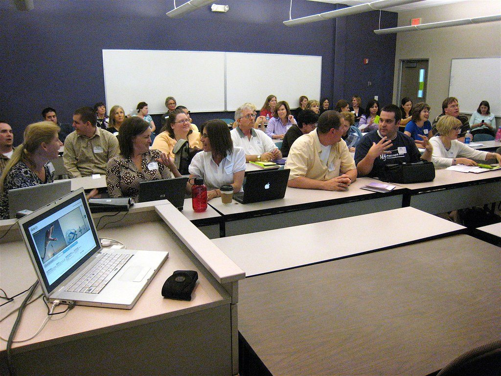
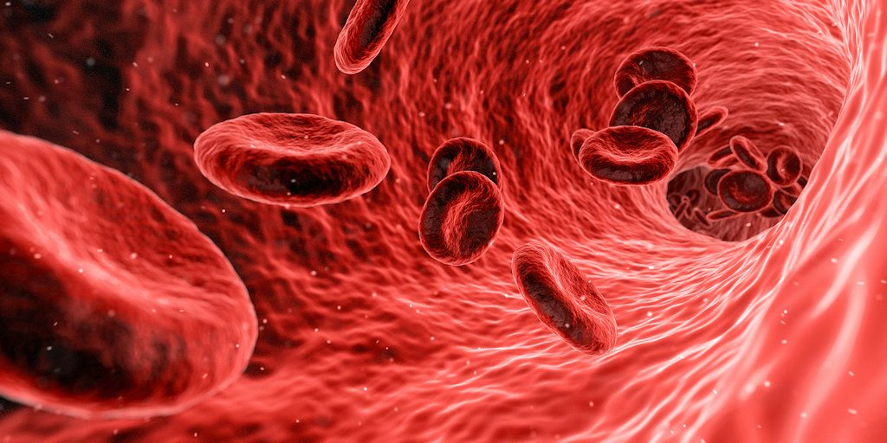
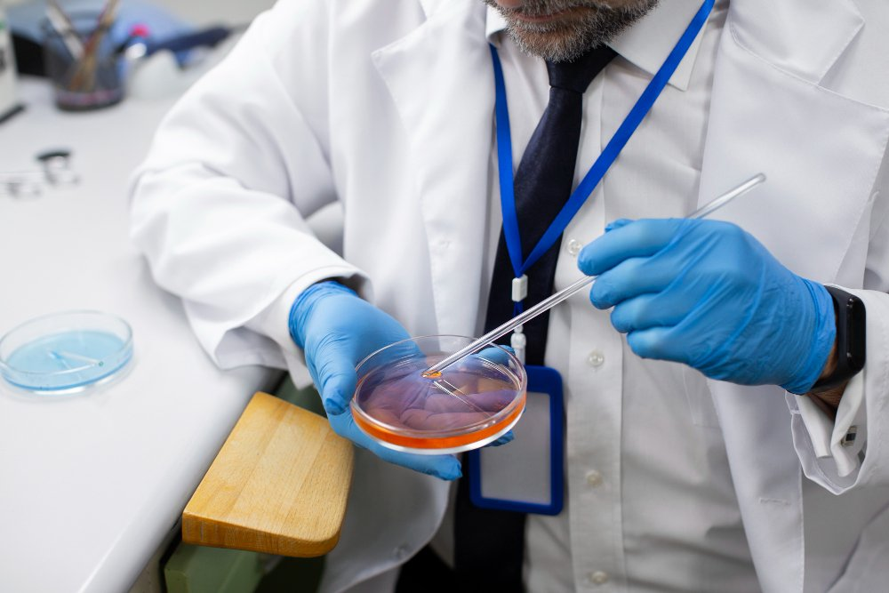

Quantum computing
Exploring quantum algorithms and computational modelling for future diagnostic research.
Birmingham · Innovation hub & research centre
Visionary science, pioneering technology and lived experience — united to make non-invasive early cancer screening a reality.
Innovation Hub
Research Centre
Quantum & AI
Patient-led
People in the UK will face cancer in their lifetime
New cancer cases worldwide each year
Survive bowel cancer when caught at the earliest stage
Projected rise in cancer cases by 2050
About us
Cancer Innovate exists to accelerate the future of non-invasive early cancer screening. We are an innovation hub and research centre in Birmingham, connecting researchers, clinicians, universities, healthcare providers, founders and technology partners around one mission: finding cancer earlier, with less harm.
We support entrepreneurial teams testing early detection technologies — and supercharge scale-up by placing lived experience, clinical reality and advanced computation in the same room.
Our story ↗Partnerships
Creating partnerships across health, science, industry and investment.

One connected ecosystem
Our dedicated Innovation Hub and Research Centre remove the barriers between a promising idea and real-world application.
Research pillars
Four interconnected fields guide our exploration of the future diagnostic landscape.
Exploring quantum algorithms and computational modelling for future diagnostic research.
Investigating machine learning, predictive analytics and intelligent diagnostic systems.
Supporting research into technologies that enable earlier detection without invasive procedures.
Creating partnerships with the NHS, healthcare providers, academia, industry and technology innovators.
Our core principles
Our mission is to accelerate innovation and advance research to transform non-invasive early cancer screening and improve lives.
Core principles
Shared mission
Accelerating the development and scaling of non-invasive early cancer detection technologies from concept to real-world impact.
Supporting earlier diagnosis to enable better treatment pathways, improved survival and enhanced quality of life.
Promoting innovation that contributes to more personalised and data-driven clinical care.
Helping reduce NHS waiting times and costs through earlier intervention and more efficient diagnostic pathways.
Advancing research into AI and quantum computing to explore the next generation of non-invasive cancer diagnostic technologies.
Why this matters
People in the UK will be diagnosed with cancer in their lifetime — Cancer Research UK
New cancer cases diagnosed worldwide in a single year — WHO / IARC 2022
Lives lost to cancer globally in 2022 — WHO / IARC
Projected rise in annual cancer cases by 2050 — IARC GLOBOCAN
Bowel cancer patients survive 5+ years when diagnosed at the earliest stage — versus fewer than 1 in 10 at the latest — Cancer Research UK
Of UK cancer cases are estimated to be preventable through lifestyle and screening interventions — Cancer Research UK
New cancer cases diagnosed in the UK every year — around 1,100 every single day — Cancer Research UK
NHS screening programmes in England — breast, bowel and cervical — leaving most cancers without a routine check — NHS England

Watch
A glimpse inside the ecosystem we are building — where researchers, clinicians, founders and patients move early detection forward together.
Meet the people behind it ↗Inside Cancer Innovate
Collaboration, research and community — captured along the way.


Questions, answered
We are a Birmingham-based innovation hub and research centre accelerating non-invasive early cancer screening. We connect researchers, clinicians, entrepreneurs, patients and partners so that promising ideas reach clinical impact faster.
Screening that requires no surgery or penetration of the body — blood tests, imaging and emerging technologies that detect early cancer signals without discomfort or risk, when treatment is most effective.
We explore how artificial intelligence and quantum computing can improve diagnostic intelligence — analysing complex biological data to find cancer earlier and more accurately than conventional methods.
Entrepreneurs, researchers, clinicians, patients and partners all have a place here. Visit our community page to find the pathway that fits you, or contact us to start a conversation.
We are rooted in Birmingham, West Midlands, UK — building local strength with global reach and connections that extend far beyond the region.
Understanding cancer
Clear, honest context on the challenge we exist to address.
Cancer is not one disease but many. It begins when cells grow uncontrollably and spread into surrounding tissue — and it can develop almost anywhere in the body.
When cancer is found early — before it has spread — treatment is typically more effective and survival outcomes improve significantly. Time is the most valuable variable.
Screening that requires no surgery or penetration of the body — blood tests, imaging and emerging technologies that can detect early signals without discomfort or risk.
Beyond convention
Breakthroughs rarely follow a straight line. We make room for bold questions, rigorous investigation and unexpected connections — because the future of detection will be built at the edges of disciplines.
“The most important innovation is the one that reaches people.”Explore the research ↗

A place for you
Whether you are shaping an idea, advancing research, transforming care or sharing lived experience, your perspective belongs here.
Find your placeProudly supporting
Fast financial assistance for cancer patients, helping people stay in treatment without added financial pressure.
Meet our charity partner ↗